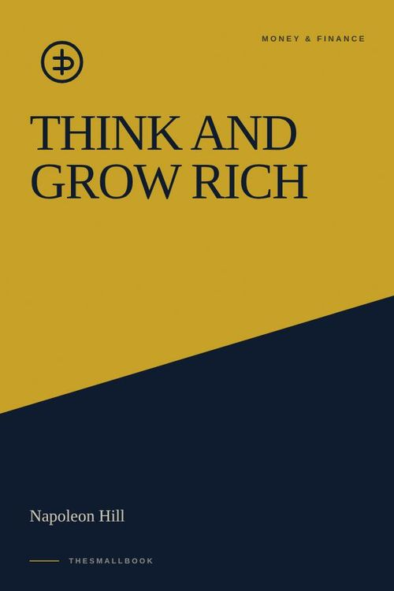

Library › Ask the Library › How do I develop a wealth mindset?
How do I develop a wealth mindset?
The short answer
Wealth starts as a mental picture: clarity about what you want, gratitude for what you have, and daily action where you are. Think in the certain way, then act in the certain way.
The books behind the answer
The Science of Getting Rich
Wallace Wattles · 1910 · 8 min · 6 lessons
Wealth comes from thinking in a Certain Way + acting in a Certain Way - the original 'think and grow rich' blueprint.
- Thinking in a Certain Way: Form a clear mental picture of what you want and hold it without doubt.
- Gratitude: The Receiver's Frequency: The grateful mind is in harmony with receiving; the wanting mind closes the channel.
- The Advancing Life: Grow or Stagnate: Give more use-value than you take, wealth is the byproduct of an expanding life.

Think and Grow Rich
Napoleon Hill · 1937 · 12 min · 9 lessons
Whatever the mind can conceive and believe, it can achieve - if you back it with burning desire, faith, plans, and persistence.
- Key lesson: Desire, faith, and a definite plan, the original formula for turning thoughts into riches.
A failure that proves it
Why did MC Hammer fail?
1996 · FAME · Loss: Peak wealth ~$33M → bankruptcy with $13M debt
Hammer had the money and lost the mindset, income without a wealth system is just a higher burn rate.
The gap is the freedom. Earning $33M and keeping $0 is a richer-looking failure than earning $50,000 and keeping $15,000. Wealth is not what you make; it's what you keep when the music stops.
Questions people ask next
Can I read this in Hindi?
Yes. This answer is written in simple English. Open any linked book and choose Hindi or Hinglish to read the full lessons in your language, with audio where available.